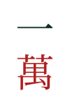
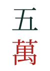
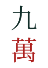
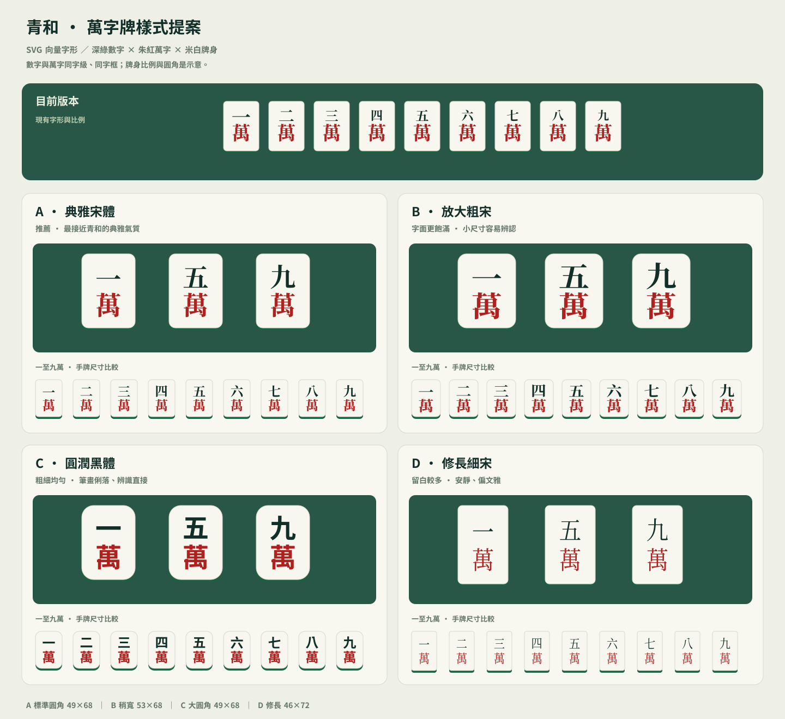

保留米白牌身、玉綠牌背、深綠數字與朱紅「萬」。四組皆為 SVG 路徑字形，數字與「萬」使用相同字級與字框。點選方案，可比較一至九萬的手牌尺寸。



關閉牌身選項，可在現有 49×68 比例下比較純牌面。牌身形狀是示意，正式採用時需同步調整 Three.js 幾何；目前遊戲仍使用原版素材。字形：Noto Serif / Sans CJK TC（SIL OFL），已轉路徑，不依賴裝置字體。
